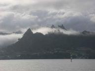
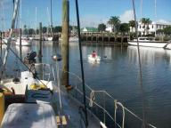
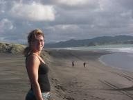
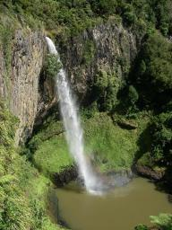
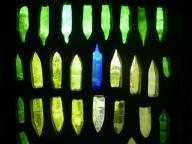
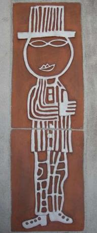

Jan Haring.nl - De wereld om met een Jan Haring - Joost Jager & Ilse Wintermans
|
|


|
Traag maar comfortabel
» exacte locatie
 We hebben de afgelopen dagen niet zo heel veel voortgang gemaakt. De windkracht viel tegen en we moesten ook een beetje de verkeerde kant op sturen om niet nog minder wind te krijgen. Het was wel erg comfortabel met nauwelijks golven en iedere dag mooi weer zonder regen. Sinds gisteravond zitten we dan wel weer echt in de passaat. We werden welkomgeheten door een paar squalletjes (windbuien) die typisch zijn voor de tropen. Halsoverkop moesten we een tweede voorzeil laten zakken omdat het veel te
hard ging en deze belandde half in het water, maar dat was niet echt een probleem. De temperatuur is ook heel redelijk aan het worden. Overdag lange broek en t-shirt, �s nachts geen mayo meer maar nog wel een zeiljas en muts. Bij vertrek was het zelfs met alles aan dat we hadden nog te koud om buiten te zitten gedurende de nacht. We verwachten nu aanstaande zaterdag aan te komen. Net op tijd voor mijn broertje die zondag landt.
We hebben de afgelopen dagen niet zo heel veel voortgang gemaakt. De windkracht viel tegen en we moesten ook een beetje de verkeerde kant op sturen om niet nog minder wind te krijgen. Het was wel erg comfortabel met nauwelijks golven en iedere dag mooi weer zonder regen. Sinds gisteravond zitten we dan wel weer echt in de passaat. We werden welkomgeheten door een paar squalletjes (windbuien) die typisch zijn voor de tropen. Halsoverkop moesten we een tweede voorzeil laten zakken omdat het veel te
hard ging en deze belandde half in het water, maar dat was niet echt een probleem. De temperatuur is ook heel redelijk aan het worden. Overdag lange broek en t-shirt, �s nachts geen mayo meer maar nog wel een zeiljas en muts. Bij vertrek was het zelfs met alles aan dat we hadden nog te koud om buiten te zitten gedurende de nacht. We verwachten nu aanstaande zaterdag aan te komen. Net op tijd voor mijn broertje die zondag landt.
|
|
|
Het betere zeilen
» exacte locatie
De volgende dag was het lagedrukgebied gelukkig een andere richting op gegaan en zijn we opnieuw vertrokken. En wat een verschil. Bij onze valse start waren we maar aan het rommelen met de stuurautomaat, de zeilen, de regen, nog steeds op blote voeten lopen, zeeziek, klotsgolven en meer. Nu ging het allemaal heel soepel. Vlak buiten de haven hebben we de zeilen gezet en ze daarna niet meer aangeraakt. We zijn nu tweeeneenhalve dag aan het zeilen in echt perfekte condities. Windkracht 3-4 van achteren,
minimale golven voor zover dat kan op zee en kleine wolkjes tegen een blauwe lucht. De eerste dag waren we allebei toch nog een beetje zeeziek, maar dat is nu over. We hebben vanavond pizza gebakken, we draaien onze wachten weer volgens het oude schema, lezen een boek, kortom we zitten er weer helemaal in. Het weerbericht voor de rest van de tocht ziet er goed uit en we hebben gehoord over de zender van een andere boot dat het bij 28 graden zuid eindelijk weer warm begint te worden. Dat is voor ons
over twee dagen!
|
|
|

Bijna weg maar toch niet
» exacte locatie
Het is de laatste tijd stil geweest op de website, maar er was ook niet veel nieuws. Ik heb enkel en uitsluitend aan de boot geklust om hem op tijd af te krijgen. Ilse heeft mij al die tijd goed verzorgd met lekkere lunches en diners en alle niet-technische vertrekvoorbereidingen gedaan zoals proviand inslaan. Ons visum verliep 22 mei al, maar vanwege het slechte weer kregen we wat uitstel van de douane. Afgelopen zondag zag het er dan toch redelijk uit en hebben we Whangarei verlaten. We hebben
afscheid genomen van onze vrienden van de Dingo en van Moet en zij hebben ons uitgezwaaid. Wanneer en of we hen nog zien blijft een verrassing. Met hen hebben we zo'n leuke tijd gehad en het is jammer weer te moeten vertrekken. Maar we hebben voor dit jaar nog een heel programma en het begint ook bar koud te worden hier in Nieuw Zeeland. In het zonnetje zijn we de rivier afgezakt en hebben we bij de douane geankerd. De volgende dag repte het weerbericht al weer van windkracht 6-7, maar we besloten
toch uit te klaren en te vertrekken. De wind zou van achteren zijn en dan is die windkracht wel te doen. Eenmaal buiten viel het allemaal erg mee. We moesten eerst nog zelfs wat motoren en daarna kon er redelijk gezeild worden in variabele wind. De golven waren alleen niet geweldig en Ilse werd heel erg zeeziek. Gedurende de nacht begon de wind aan te trekken richting kracht zes en werd alles comfortabeler en zeilden we sneller. We waren blij met de beslissing om toch te vertrekken totdat we vanochtend
het weerbericht zagen. De komende dagen prima, maar daarna zou mogelijk een nieuw lagedrukgebied ons pad kruisen. Moeilijk, moeilijk, want we waren net zo lekker aan het zeilen. Na te hebben gepraat met weerguru Winfried op de kortegolf hebben we besloten de gok toch maar niet te nemen. Hij adviseerde om even een dagje te wachten en te kijken wat de voorspelling doet. Niet leuk want we waren er helemaal klaar voor, maar we wilden het risico toch maar niet nemen. Ilse moet goed voor de baby blijven
zorgen en als ze een paar dagen zeeziek is met weinig eten en drinken dan is dat niet goed. Dus heb ik de douane maar opgeroepen en toestemming gevraagd om weer opnieuw in te klaren. En nu liggen we dan in Opua, de plek waar we waren aangekomen in november. Het is wel lekker om weer even uit te rusten van ons eerste nachttochtje en we zijn toch weer vijftig mijl dichterbij Nieuw Caledonie. We hopen maar dat het een goede beslissing is en dat we nu niet nog heel lang hoeven te wachten. Misschien valt
het allemaal mee met het laag en kunnen we toch morgen weg. Anders misschien komend weekend. Er is wel enige tijdsdruk, want mijn broer landt op 8 juni in Nieuw Caledonie en we willen hem daar liever niet laten wachten.

|
|
|
I came from down-under...
» exacte locatie
Afgelopen zaterdag vertrok ik dan met een enorme backpack vol real
good Dutch stuff (nee, geen ingeslikte bolletjes, maar lekker veilig:
schenkstroop, drop en Jip en Janneke- rompertjes) richting Nieuw-
Zeeland. Na een paar uur door hectisch Hong- Kong te hebben gelopen
zat ik opnieuw - met mijn benen in m'n nek- in het vliegtuig. Na weer
12 uur vliegen landde ik in Auckland. Zoals jullie misschien wel weten
gaat er regelmatig iets mis met mij op het vliegveld=85 (Ja, ik ben idd
dat meisje uit die wilde verhalen die zonder paspoort van Kaapstad
naar Amsterdam is afgereisd). Maar goed, ook dit keer kwam mijn toch
ietwat chaotische aard weer even boven drijven.. In het vliegtuig werd
al een aantal keer aangekondigd dmv van filmpjes dat het ABSOLUUT
verboden is om "bio-organic material" Nieuw- Zeeland in te voeren.
Volgens de kiwi's is dit erger dan XTC. Ze zijn als de dood voor enge
insecticiden, vieze wormpjes in appels, bananen e.d. op dit eiland.
Logisch, want dit prachtige eiland moet blijven zoals het is. Eenmaal
op het vliegveld werd het nog eens een aantal keer omgeroepen en ook
dmv van borden werd aangeven: "Fine 500.000 dollar", mochten ze een
complete ananas in je tas vinden. Daarnaast moest ik nog een complete
vragenlijst invullen. Eenmaal bij de douane bleek dat ik =E9=E9n vraag
over het hoofd had gezien. De meest onschuldige vraag van het lijstje:
"Of ik de afgelopen 12 maanden in de gevangenis heb gezeten". Je
begrijpt dat er even wat langer naar m'n paspoort werd gekeken=85
Daarnaast vroeg mevrouw of ik echt niets van fruit oid in mijn tas had
zitten. Nee, dus. Je raadt het natuurlijk al: toen mijn rugzakje
eindelijk door de r=F6ntgen ging, werd er even paniekerig gereageerd
door het personeel. Mijn tas werd leeg gehaald.. En ja hoor, er werd
een onschuldig Hollands appeltje uitgevist. Ik mocht uiteindelijk
doorlopen, maar ik sta vast voor eeuwig op de zwarte lijst.. Het was
heerlijk om Ilse aan te treffen op het vliegveld! Na bijna 2 jaar kon
ik haar eindelijk weer een gigantisch lange grouphug geven, ook namens
alle familieleden en vrienden in Nederland natuurlijk. En ja, ik was
een van de eersten die Ilse kon feliciteren met de "kleine kiwi"(
Nieuw-Zeelanders worden liefkozend 'kiwi's genoemd). En jongens, ze
heeft echt een prachtbuikje! De eerste nacht hebben we doorgebracht in
de heerlijke berglucht van the long white cloud. Ilse ging compleet
uit haar dak toen ze zag dat ze in dit knusse huisje onbeperkt kon
douchen. Dit was toch even wat anders dan een douche met muntjes zoals
ze de afgelopen tijd gewend was. De afgelopen dagen hebben Ilse en ik
intens genoten van elkaar en van de breathtaking omgeving van Nieuw-
Zeeland. We hebben gelachen, gehuild, geliefd, geschreeuwd, geleefd,
gevochten en gedronken (nee, grapje, dat laatste mogen zwangere
vrouwen helaas niet meer;-). Helaas heb je sommige dingen in het leven
niet in de hand en kwam er donderdag helaas een einde aan onze
heerlijke dagen in Nieuw- Zeeland. Zoals Ilse het zo mooi zei: "Tja,
het leven is niet altijd een doos met bonbons tenzij er ook niet zulke
lekkere in horen te zitten". Mijn opa is afgelopen dinsdag overleden
en ik wilde de begrafenis bijwonen. Het afscheid was zwaar, maar deze
heerlijke dagen neemt niemand ons meer af! We hebben ons compleet suf
genoten.. .Onze vriendschap is alleen maar sterker geworden.
|
|
|
En we drijven weer!
» exacte locatie
Afgelopen maandag kwam Ilse's beste vriendin Silvia aan in Auckland om ons te bezoeken. Alleen omdat de boot op de kant weinig aantrekkelijks te bieden heeft was het plan dat Ilse en Silvia eerst een weekje zouden rondtrekken met de auto. In die tijd zou de boot het water in gaan en kon ik proberen alles zeilklaar te krijgen zodat we de tweede week ook nog wat zouden kunnen zeilen met ons drieen. Dus sinds maandag was ik alleen op de boot. Niet heel gek, want een boot met zoveel troep is eigenlijk
geen plek voor een zwangere vrouw. En ik kon nog meer gereedschap uitgestald laten dan wat ik normaal al deed. Alles liep volgens plan totdat ik telefoon van Ilse kreeg dat Silvia plotseling voortijdig terug moest keren naar haar familie. Ilse zou haar op het vliegveld uitzwaaien en dan terug naar de boot komen zo rond de tewaterlating. Het kan soms heel anders lopen dan verwacht. Toen de boot in het water lag was Ilse er nog niet, maar gelukkig kon Martin van de Dingo me helpen de boot naar de haven
te varen. Als we bij de werf te lang aan de steiger zouden blijven liggen zouden we vast komen te zitten met laag water. In de haven hebben we eerst nog een showtje weggegeven door op de stroming over dwars tegen de palen aan te drijven, maar daarna lagen we toch goed tussen de palen. Ondertussen was Ilse ook net aangekomen. Toen we net Ilse's reisspullen in de boot hadden gezet en de bijboot weer in wilden stappen bleek deze ineens twintig meter verderop te drijven. Oeps, niet vastgelegd. We zijn
er echt even helemaal uit. Kleren uitgetrokken en in het donker de rivier ingesprongen om dat bootje maar weer op te halen. Daarna hebben we samen met Dingo friet met mayonaise gehaald bij de Chinees en de bitterballen (made in NZ volgens NL recept) gefrituurd die Ilse op de terugweg uit Auckland in een Nederlandse winkel had gekocht. Zonder ons bezoek was er ook ineens geen haast meer om de boot in een paar dagen zeilklaar te krijgen. Maar het leven op het water is wel weer helemaal fantastisch.
Vanochtend werden we wakker met een leuk zonnetje en blauwe lucht. De boot wiegde langzaam heen en weer. Dat doet een boot altijd, maar nu we zo lang op de kant hebben gestaan viel het ons ineens weer op. Buiten niet het gebruikelijke geluid van snerpende haakse slijpers en grommende bulldozers en ook geen uitzicht meer op een industrieterrein. We lagen weer gezellig tussen de andere boten in het Town Basin in Whangarei. Ik stapte in ons nieuwe bijbootje en roeide langzaam naar de kant genietend
van onze herwonnen leefomgeving. Zelfs het feit dat ik op weg was naar de tandarts voor het vullen van drie gaatjes deed niets af aan mijn geluk. En de tandarts was erg vriendelijk, professioneel, pijnloos en gaf me ook nog korting. De rest van de dag hebben we wat gewinkeld en de middag afgesloten met een bbq op de boot. Wat een heerlijk ontspannen dag na de afgelopen acht weken non-stop geklust te hebben.

|
|
|
12 november
» exacte locatie
En dan zeilen we niet meer met z'n tweeen, maar met drie! Jawel, Ilse is zwanger en we verwachten op 12 november ons eerste kindje. Een paar dagen geleden hebben we een echo laten maken en alles zag er goed uit. Dus vonden we dat we het nieuws nu wel openbaar konden maken. De meest gestelde vraag tot nu toe is: was het gepland? Het antwoord is ja. Het leek ons wel een mooi moment met alle tijd die we aan de baby kunnen besteden op de boot. De vaarplannen zijn wel veranderd. Het in drie jaar rond
de wereld is niet meer haalbaar, want een oceaanoversteek met zeven maanden en een bevalling in een vaag ziekhuisje in Indonesie leek ons geen goed idee. We krijgen de komende tijd eerst de broer van Joost, dan zijn ouders en dan zijn zus op bezoek in Nieuw Caledonie en Australie. Daarna varen we naar Brisbane, ook in Australie, waar we bedenken wat de verdere stappen worden. In ieder geval moet er door Joost ook gewerkt worden, want deze wending was niet begroot bij vertrek. Maar het is wel een
wonderbaarlijk gebeuren zo'n baby die in Ilse's buik groeit. Gedurende de dag zien we af en toe de foto van de echo weer liggen en elke keer realiseren we ons dat dit toch wel heel iets anders is dan al het andere dat we meemaken.

|
|
|
Zelfs geen vrije dagen
» exacte locatie
En we dachten nog wel dat een half jaar Nieuw Zeeland ons alle tijd
zou geven om onze boot Hafskip van groot onderhoud te voorzien. Die
tijd is echt voorbij gevlogen! Natuurlijk hebben we al heel veel
gedaan maar het is toch altijd weer meer werk dan je denkt. Vooral het
hele hoofdstuk teakdek verwijderen, 800 gaatjes vullen en laten
zandstralen zijn we bij elkaar al zo'n 2,5 maand mee bezig geweest.
Komend weekend gaan de eerste boten vertrekken naar het warme noorden,
waaronder Yagoona en Muline. Raar, ineens is de tijd gekomen van gedag
zeggen terwijl wij nog aan het stressen zijn om de boot op tijd het
water in te krijgen. We hebben onze lanceerdatum een kleine twee weken
naar achteren geschoven, naar 1 mei. We maken lange dagen en een dagje
vrij zit er voorlopig niet in, ook geen weekend.Gelukkig dat we al 'op
vakantie' zijn geweest, anders was het er niet meer van gekomen. Maar
als de boot straks weer in het water ligt kunnen we genieten van alle
improvements en zullen we hard ons best moeten doen een roestplekje te
vinden! Ik kijk zo uit naar mooie ankerplekjes en verder rondcruisen.
En dat terwijl we in november zo blij waren om een half jaar niet te
zeilen. De komende weken nog maar extra genieten van alle luxe als
onbeperkt internet op de boot, kaas, yoghurt, normaal vlees, appels en
ijsjes eten. Toelichting op de klusfoto's: Veel verven, alle plekjes
zowel onder als boven water bijgewerkt en het hele dek, kajuitdak en
kuip. De kleur die we hadden laten mengen was te wit uitgevallen en de
tweede poging had een tintje groen in zich, hmmm, lastig. Als.het voor
de laatste laag maar goed is. Alles heeft nog twee lagen nodig en dan
is het klaar. Gelukkig komen er weer wat droge dagen aan! De
kajuitingang, vanwege lekkage binnen haalt Joost het roest weg en
laten we er een nieuw stuk inlassen. Via onze buurman die z'n halve
onderwaterschip opnieuw in elkaar moet laten lassen (vanwege corrosie
aan de binnenkant) hebben we Paul leren kennen. Een erg goede lasser
die het leuk vindt wat projectjes te doen. Lassen is echt zijn hobby.
Komt goed uit, want we hebben wel wat klusjes. In ruil daarvoor heeft
Joost zijn computer gefixt en geven we 'm onze fiets (die hebben we
gekocht zodat we de auto kunnen verkopen en toch mobiel kunnen blijven
en hij vond de fiets wel mooi) en wat geld. Onze boegspriet was ook
aardig roestig en Paul had wel zin om een nieuwe van RVS in elkaar te
lassen. Zo'n aanbod slaan we natuurlijk niet af. We wisten alleen niet
dat die drie meter lange buizen ongepolijst worden afgeleverd. We zijn
dagen bezig geweest die buizen mooi glimmend te krijgen. Tja, een
beetje een luxeklus terwijl er nog zoveel ander werk ligt maar als de
boegspriet er eenmaal op zit is het erg lastig er goed bij te komen.
Maar het gaat wel erg mooi worden! Eindelijk komen de houten planken
er op die we al sinds Nederland in de kuipbank hebben liggen. Ander
project was de afsluiters. Allemaal vervangen door degelijke plastic
exemplaren en op twee plekken nieuwe pijpjes in laten lassen zoals
hier bij de uitvoer van de wc. Op de plek van de stofprop hoort de
schroefas met propellor te zitten. De oude propellor bleek niet goed
meer, een blad stond op afscheuren. Dus is er op het moment eentje
onderweg uit Nederland (thanks Corry en Frans!). Iets anders heel engs
was de dieptemeter. Blijkbaar zat er ooit een grotere en hadden ze
daarom zo'n grote pijp in de boot gelast. De huidige dieptemeter is
een stuk kleiner en Joost kon 'm zo los trekken! Als dat onderweg was
gebeurd was het water heel snel naar binnen gestroomd. Joost heeft
zelf van metaal een kleiner rondje gemaakt met gat en die heeft Paul
er ook voor ons ingelast. Zo kan Joost de dieptemeter een stuk
steviger terugplaatsen. De herfst is begonnen en langzaam wordt het
kouder en de dagen korter. Overdag is het nog steeds een graad of 20
maar 's nachts onder de tien. Erg koud als je 's nachts naar de
w.c.moet lopen. Maar over een week of vier kunnen wij ook koers gaan
zetten naar de warme tropen, heerlijk.


|
|
|
Gestraald!
» exacte locatie
Het hoogtepunt van ons grote teakdekproject is gepasseerd! Na weken
van voorbereiding (wegbikken, lassen, schroeven, slijpen) is al het
roest dan eindelijk van het dek gezandstraald. En er was zelfs nog
tijd en zand over, dus hebben de stralers meteen maar alle
roestplekjes op de hele boot meegenomen. Erg mooi. Na het stralen
hebben we al het kale staal direct in de primer gezet om het resultaat
veilig te stellen. Twee dagen later een eerste laag witte verf erover
en we zien er nu netter uit dan ooit. Maar we hebben helaas nog een
hele lijst met andere klussen behalve het aanbrengen van alle volgende
verflagen. Het is even investeren, maar daarna kunnen we weer een
halve aardbol genieten. De voorlopige tewaterlating staat voor 20
april.
|
|
|
Hafskip op het droge
» exacte locatie
Toen we vorige week terugkwamen van vakantie hadden we meteen een mooi
weergat om van Opua naar Whangarei te zeilen, zo'n 80 mijl zuidwaards.
Echt leuk om nog even verder vakantie te vieren. De eerste dag maar
een klein stukje gevaren, de Bay of Islands in en een mooie ankerplek
gevonden. Dingo was daar ook en nodigden ons uit om te komen eten, erg
leuk. Weer even helemaal terug in het cruisen. In een paar dagtochten
zijn we naar Whangarei gezeild. Leuk is dat je daar in het stadje kan
liggen. Lopend naar de supermarkt, luxe! Nieuwtje: we hebben een
tweede zeilboot gekocht! Hij is van hout met fiberglass, 2,5 meter
lang en het mooiste is dat je 'm als twee helften uit elkaar kan halen
(die precies in elkaar passen) en op de voorpunt kan vastmaken. We
zijn er erg blij mee. Ons opblaasbare bootje begon namelijk langzaam
op te lossen door de zon... Afgelopen vrijdag is Hafskip het water
uitgegaan. Dat is wel maf, om ineens op het land te wonen. Niet per
ongeluk de wc gebruiken ;-). We hadden gevraagd of we ver van de
andere boten af konden staan omdat we veel moeten slijpen, lassen en
zandstralen aan de boot. Geen probleem. Speciaal voor ons hebben ze
een plekje achteraf vlak gemaakt en op de dag zelf de stroom
doorgetrokken. Erg mooi, we kunnen lekker veel herrie en rommel maken
en hebben nog privacy ook. We hebben meteen een grote haakse slijper
gehuurd zodat Joost een gruwelijke klus kon doen. Het afslijpen van de
roestvrijstalen rand die rondom het teakdek zat. Twintig meter lang!
Maar we hebben nu wel een lekker breed gangboord.
|
|
|
Modderbubbels en verwarmde kampeergrond
» exacte locatie
We zijn weer terug op de boot! Afgelopen weekend had het flink gewaaid
en een medekampeerder kwam ons vragen of het onze boot was in de krant
van zondag... Een zeilboot was van de meerboei geslagen op de rotsen
geland, zag er niet best uit. Gelukkig was het onze boot niet maar we
vonden het wel even spannend. Maar onze boot lag er nog keurig bij
toen we gisteren terugkwamen. Onze laatste kampeerplek was wel erg
bijzonder... Het plaatsje Rotorua ligt op een breuklijn en op vele
plekken zie je rookpluimen uit de grond komen. Verder veel bubbels in
kratermeertjes met de gekste kleuren door de verschillende stoffen die
in de grond zitten. Door veel sulfaat krijg je bijvoorbeeld een geel
meertje en door antimoon kleurt het oranje. Ook modderbubbels kom je
tegen. Ons tentje stond naast zo'n modderbubbel dus die hoor je de
hele nacht erg rare geluiden maken en de grond was op meerdere plekken
warm door al die thermische activiteit onder de grond. Die nacht heb
ik het niet koud gehad! Even wat toelichting bij de foto's: Zeehonden
in Kaikoura, knalblauwe kratermeertjes tijdens de Tongarirowandeling
(was erg mooi maar ook pittig met harde wind en mist op het hoogste
punt), de 'champagnepool' en een geiser!


|
|
|
Rendieren schieten
» exacte locatie
Ah, dus je gaat een keer per jaar op jacht. Een afgelegen gebied in en
dan een paar rendieren schieten om het hele jaar van te kunnen eten.
En dan laat je je dus afzetten met de helicopter en een week later
weer ophalen omdat dat vlees zo zwaar is op de terugweg? Wat sommige
dingen betreft is de lifestyle hier toch echt anders dan in Nederland.
Vooral ook omdat we op een dag twee verschillende mensen tegenkwamen
die het allebei heel gewoon vonden, jagen met transport per
helicopter! In Europa hoef je over zulke hobbies echt niet na te
denken, maar hier is per inwoner zoveel land beschikbaar dat dit soort
dingen kunnen. Wij hebben wat minder spectaculair gedaan en zijn met
onze auto (die tegenwoordig een heel sportief geluid heeft wegens een
groeiend gat in de uitlaat) verder naar het noorden getrokken. Het is
de afgelopen dagen zelfs serieus koud geweest met nachttemperaturen
onder de tien graden! En veel regen. Maar nu schijnt de zon weer
heerlijk en we hebben net in het park hier in Christchurch naar
muziekoptredens geluisterd. Even de opvallendste foto's: Die
rotsballen op het strand zijn lang geleden heel klein begonnen en als
een parel gegroeid tot het formaat dat ze nu hebben. De zee slijt het
omliggende zachte gesteente weg waardoor ze langzaam tevoorschijn
komen uit het land. En het blauwe meer is in het echt ook zo blauw! De
oorzaak is rotsgruis dat door een gletsjer is gemaakt door het continu
tegen elkaar schuren van rotsen. Dit gruis komt in het water terecht
en breekt het zonlicht op zo'n manier dat het deze blauwe kleur
krijgt.
|
|
|
Bevindingen
» exacte locatie
Vanaf de pancake-rotsen zijn we afgezakt naar ongeveer het
zuidelijkste punt van het Zuider eiland en vanaf daar weer iets omhoog
langs de oostkust naar Dunedin waar we nu zijn. Onderweg hebben we
landschappen gezien die wel echt de indruk uit Lord of the Rings
wekten, maar we vinden toch dat de echte manier om de natuur van Nieuw
Zeeland te verkennen is te voet met tent. Met de auto kom je wel hier
en daar langs bezienswaardigheden, maar alles ligt toch redelijk ver
van elkaar en je blijft meestal dicht bij de bewoonde wereld. Via een
van de vele meerdaagse wandeltochten kun je hier echt de wildernis in.
Met tent en kooktoestel op de rug enzo. Wij denken zoiets toch maar
niet te doen omdat we er de spullen niet voor hebben. Sandalen uit de
supermarkt in Panama en een tent van 35 euro van de Nieuw-Zeelandse
Praxis schijnen echt niet voldoende te zijn en een investering in
serieuze spullen willen we niet doen. Andere dingen die ons opvallen:
Alle cafes zijn hier al rookvrij en dat is helemaal perfekt. Geen
stinkende kleren de volgende dag. In Nederland leek zoiets altijd
onmogelijk, maar er is echt niets mis met de cafesfeer hier. Verder,
campers. Alle advertenties in bladen laten campers zien midden in het
wild. Ziet er goed uit en geeft een beetje het gevoel van ankeren met
de boot. Maar in de praktijk is er toch bijna niemand die met een
camper zomaar ergens gaat staan. Of het mag niet of het wordt als te
gevaarlijk beschouwd. En als je dan op de camping staat heb je meestal
zo'n mooie gemeenschappelijke keuken beschikbaar dat de ingebouwde
keuken ongebruikt blijft. Voordeel is wel dat je geen tent hoeft op te
zetten natuurlijk. Niet dat dat veel tijd kost, maar zoekend naar het
ideaal lijkt ons een busje waar je alleen in kan slapen met wat ruimte
voor spullen voor dit land perfekt. Die gemeenschappelijke keukens
vinden we wel erg leuk. Kamperen is niet meer als vroeger gerommel met
een brandertje voor de tent die steeds uitwaait en met regen
opgesloten zitten in de tent. Nee, hop, twee pitten, broodrooster,
waterkoker, magnetron, gezellige zitruimte soms met bankstel,
pooltafel, bookswap, internet, etc. In dit rijtje staan sowieso dingen
die voor ons erg luxe zijn vergeleken met de boot! Tot slot nog even
wat toelichting bij de foto's, waarschijnlijk niet in de goede
volgorde: gemeenschappelijke keuken, Fox gletsjer, blue pool (koud),
wat uitzichten, met de auto over een erg spannende weg (alleen voor
4wd wat we niet hebben), pinguin in het wild!, gefossilleerd bos van
180 miljoen jaar oud!
|
|
|
Zuider Eiland
» exacte locatie
Even een korte update: We zijn op het Zuider Eiland. In het Abel
Tasman park hebben we twee dagen gewandeld en tussendoor overnacht op
een boothostel. Toch nog op een boot geslapen dus. En het is weer erg
toevallig, maar we hebben daar een stel uit Nijmegen leren kennen.
Verder hebben we de zogenaamde pancake-rotsen bekeken aan de westkust.
De westkust is erg ruig met lange brekende golven overal. Voor degenen
die zich afvroegen wat de krul op de foto van het vorige verhaaltje
voorstelt: het is een opgerold blad in wording van de varenboom. Een
typische plant voor Nieuw Zeeland.
|
|
|
Op vakantie!
» exacte locatie
We hadden even helemaal genoeg van het geklus aan de boot en alle
troep die dat gaf. Omdat we ook in deze "werkplaats" moeten wonen is
dat niet altijd makkelijk. Er is niet ergens een opgeruimd huis waar
we na afloop van een klusdag naar toe kunnen. Maar nu we het laswerk
hebben afgesloten en de boot weer waterdicht is, vonden we dat het
tijd werd voor vakantie! Ja, iedereen thuis denkt dat we altijd op
vakantie zijn, maar goed. Voor ons is het wel heel ontspannen om even
met de auto en de tent weg te zijn. Kamperen is interessant. Van de
ene kant is het primitief: elke dag de tent opzetten en geen koelkast.
Maar wat we nu wel hebben is onbeperkt stromend water (ook warm!) en
een riante afwasbak. We hebben al in tijden niet meer zo comfortabel
afgewassen .gif) . We zijn onze tocht begonnen met het bezoek van
vrienden in Whangarei en Auckland (Yagoona) en daarna zijn we bij het
hot water beach geweest. Dat is een strand waaronder een heetwaterbron
ligt. Bij laagwater kun je daar je eigen kuil graven die zich
vervolgens vult met heerlijk warm water. Soms zelfs zo heet dat je je
teen brandt. En toevallig was het laagwater toen wij er waren rond
zonsondergang. We hebben dus in onze eigen natuur jacuzzi naar de
ondergaande zon gekeken terwijl het eigenlijk al best koud was op het
strand. Verder hebben we nog een waterval bekeken en de Mount
Taranaki, een vulkaan midden in de open vlakte. Op dit moment zijn we
in Wellington en klaar om over te steken naar het Zuidereiland. . We zijn onze tocht begonnen met het bezoek van
vrienden in Whangarei en Auckland (Yagoona) en daarna zijn we bij het
hot water beach geweest. Dat is een strand waaronder een heetwaterbron
ligt. Bij laagwater kun je daar je eigen kuil graven die zich
vervolgens vult met heerlijk warm water. Soms zelfs zo heet dat je je
teen brandt. En toevallig was het laagwater toen wij er waren rond
zonsondergang. We hebben dus in onze eigen natuur jacuzzi naar de
ondergaande zon gekeken terwijl het eigenlijk al best koud was op het
strand. Verder hebben we nog een waterval bekeken en de Mount
Taranaki, een vulkaan midden in de open vlakte. Op dit moment zijn we
in Wellington en klaar om over te steken naar het Zuidereiland.



|
|
|
Klusupdate
» exacte locatie
Tussen de feestdagen en wind en/of regendagen door hebben we redelijk goed doorgeklust. Al het teakhout is nu van het dek en afgevoerd en alle gaatjes van de oude schroeven zijn gedicht. We kwamen nog wel een verrassing tegen. Rond de raampjes had het zo lang ingewaterd dat het dek daar volledig was weggeroest. Nieuw staal inlassen, een dure reparatie. Na wikken en wegen hebben we besloten om dan zelf maar een lasproject te starten. Via Trademe (de Nieuw Zeelandse marktplaats.nl) hebben we een lasapparaat
gekocht. Ik had wel een boek gelezen over lassen, maar in de praktijk is het toch een handigheid die je moet krijgen. Michel, een fransman van de boot Mariposa, wilde me wel de beginselen uitleggen. In het Frans, om het allemaal nog wat makkelijker te maken. Samen zijn we een dag bezig geweest om een van de twee gaten te dichten. Erg leerzaam. En vandaag was ik voor het andere gat toch echt zelf aan de beurt. Eerst nog maar een beetje geoefend op wat schroot. Dat ging niet heel slecht, maar echt
vertrouwen in een succesvolle reparatie van het dek had ik nog niet. Daarna al het roest uitgeslepen en een nieuw stuk op maat gemaakt, waarbij ik ook nog even met de haakse slijper in mijn vinger sneed. Aaaahhhh, bloed en een gelegenheid voor Ilse om dat zwaluwstaartje eens te proberen. Dat was het dieptepunt van de dag en daarna ging het allemaal steeds beter. Samen hebben we heel rustig en op ons gemak dat nieuwe plaatje staal in de vorm van het dek gebogen en daarna erin gelast. Dat ging wel
niet altijd goed, maar met de slijper is dat wel weer te corrigeren. En het zit niet onder water, dus zo nauw komt de kwaliteit niet. Toen het er aan het eind van de dag helemaal in zat was ik erg blij.
|
|
|
Tall ship race
» exacte locatie
Joost en ik hebben voor het eerst in ons leven meegedaan aan een zeilrace. Niet met Hafskip, want ons hele teakdek is er nu af en de boot een grote rommel. We werden uitgenodigd door Tracy en Matt van de Helene, een 17 meter lange tweemaster van staal. De race was in Russell waar we vorige week ook oud en nieuw hadden gevierd. Frans, Sylvia en Dylan van drie waren met ons mee toen. We dachten dat het een goed feestje zou worden in Russell maar de 2-koppige bluesband met achtergrondbandje knalden
nou niet bepaald de pan uit. Vlak voor twaalf uur gingen we terug naar onze boot en we waren net op tijd voor het vuurwerk, hadden we bijna het nieuwe jaar ingeluid in de bijboot ;-). Tracy en Matt kwamen bij ons champagne drinken en zo leerden we hen kennen. De race was vooral bedoeld voor grote klassieke boten maar als je twee masten had mocht je ook meedoen. Bij de start heb je een denkbeeldige startlijn en daar mag je niet overheen zeilen voor de race begint. Alle boten proberen zo dicht mogelijk
bij de startlijn te varen (zonder motor uiteraard) om als eerste weg te zijn bij het startsein. Een erg mooi gezicht, al die boten zo dicht bij elkaar! En ja! Daar gingen we! In het begin extra oppassen want sommige boten hadden waterballonnen meegenomen met een speciale tool om ze te lanceren. Die kwamen aardig hard aan. Er stond een perfect windje, kracht vier. Het parcours was 16 mijl lang. Het eerste punt waar we heen moesten was een rots in de vorm van een haaienvin en was net niet bezeild.
Dus moesten we een paar keer overstag. Dat gaat wel lekker snel met veel bemanning. Het was ook een tijd geleden dat we de voorrangsregels hadden toegepast. Je wilt natuurlijk zo goed mogelijk naar je doel varen maar je moet soms ook boten voorrang geven dus dan ga je zo dicht mogelijk achter ze langs, best spannend. Het tweede punt was een gele boei op de terugweg. Die was mooi bezeild. Toen op naar de juryboot, de finish. Omdat er allemaal verschillende boten meedoen aan de race krijgt iedereen
een bepaalde handicap om het eerlijk te maken. Zo kan het dus zijn dat je als eerste over de finish zeilt maar toch laatste kan worden. Wij zijn derde geworden! Maar dan wel van onderen gezien ;-). Voor het eten hadden ze een hangi gemaakt. Dat is een enorme aardoven. Die hadden we al op meer eilanden in de Pacific gezien alleen heette het dan anders. Dan stopten ze het eten in bananenbladeren maar hier gebruikten ze gewoon aluminiumfolie. Het eten smaakt een klein beetje gerookt. Een handige manier
om voor heel veel mensen tegelijk eten te maken. Na het eten begon het feest dat we eigenlijk met oud en nieuw hadden verwacht. Ze hadden twee bands en eentje was een jazzband, erg leuk! Geen flauwe achtergrondbandjes maar echte instrumenten. De dansvloer vulde zich snel en we kwamen ook veel bekenden tegen. Kon ik lekker dansen en Joost kletsen. We vonden het erg leuk om mee te doen dus wie weet gaan we met Hafskip ook een keer meedoen aan een race.
|
|
|
Ex-lifters
» exacte locatie
Dat Opua waar we met de boot liggen is toch wel erg onhandig ver verwijderd van alles. Supermarkt, 6 km. Doe-het-zelf zaak, 12 km, bootspullen zijn wel dichtbij te koop, maar voor specialiteiten moet je meteen naar Whangarei, 90 km. En een normale bus rijdt hier niet. Alleen eentje die de grote plaatsen verbindt, waar je lastig voor moet reserveren en die ook nog erg duur is. Dus hebben we af en toe maar eens geprobeerd te liften. Eerst alleen met de duim omhoog, later met vooraf geschreven bordjes
en tot slot volledig professioneel met paraplu, leeg schrijfblok en zwarte stift. In Nederland liftten we nooit. Het lijkt niet echt algemeen geaccepteerd. Maar het is wel interessant. Na een tijdje valt het op welke chauffeurs lifters meenemen. Niet de dure auto's, maar juist de slonzige wagens met minder bedeelden. En meerijden met een Nieuw Zeelander is natuurlijk interessant omdat je zo veel hoort over dit land. Bovendien is het nog milieuvriendelijk ook. Maar goed, het is ook wel handig om je
eigen auto te hebben. Als het regent bijvoorbeeld of met veel boodschappen. En aangezien we voor het rondreizen toch al een auto zochten hebben we de laatste weken rondgekeken naar iets goedkoops. Alleen wilde dat niet echt lukken. We hebben van alles geprobeerd. Via via, op de veiling, via de autodealer, briefjes bij de supermarkt, backpacker-hostel-prikborden. Maar het was of duur of slecht. Alleen toen we vorige week de zoveelste autohandel verlieten in Whangarei kwam er ineens iemand op ons af
met de vraag of we een auto zochten. Hij had er eentje te koop voor 250 euro en wilde deze net naar de handelaar brengen. Eerste gedachte was dat dat nooit wat kon zijn. Toch even gekeken en alle punten nagelopen met mijn samenvatting van internet-car-buying-tips. Het verhaal was gewoon erg goed. De auto was oud (1986) met 220000 km, maar wel altijd goed onderhouden. Alle bonnen waren aanwezig. Er zat zelfs nog APK op tot maart, precies genoeg voor het rondreizen, en daarna kunnen we altijd nog zien.
Ook al gooien we de hele wagen weg daarna, dan is het nog veel goedkoper dan een huurauto. Dus we hebben hem gekocht voor die prijs en na een paar ritjes zijn we nog steeds totaal tevreden. De liftbordjes zijn de prullenbak in gegaan, maar onze gedachtes over lifters en mensen die lifters meenemen zijn wel veranderd. Alleen moeten we nog wel goed op de linker helft blijven rijden, het valt soms niet mee
|
|
|
Kerst
» exacte locatie
Vorig jaar was het kerst op de Atlantische oceaan. Erg apart, maar dit jaar wilden we er toch wel wat meer van maken. Wat hier erg populair is is om met kerst te gaan barbequeen op een van de eilandjes. Ja, heel wat anders dan in Nederland. Na al dat geklus waren we wel toe aan een onderbreking. Samen met Marc en Svenja, het net getrouwde stel, zijn we de Bay of Islands in gezeild en hebben we een leuk eilandje gevonden. Het diner bestond uit ham met meloen als voorafje, veel vlees op de barbeque
als hoofdgerecht en als toetje tiramisu. Niet slecht. 's Avonds hebben we onze kerstboom van 1 euro aangesloten. Een ongelofelijk ding met heel veel lampjes en vijf verschillende knipperpatronen. De volgende dag de traditionele Nederlandse boswandeling alleen dan over het eiland. 's Middags hebben we nog een andere ankerplek bezocht en de volgende dag zijn we weer teruggevaren naar Opua. Het weerbericht hadden we met al onze zogenaamde zeilervaring even genegeerd, waardoor we verrast werden door
een vier uur durende terugtocht pal tegen windkracht 5-6 en stroming in. Maar goed, met de motor hard aan kom je er wel. Alleen mooi is anders. Al met al een geslaagd uitstapje waarin we met ons allen veel gelachen hebben.

|
|
|
Halve dek weg
» exacte locatie
Dat gaat al de goede kant op! De koevoet is m'n favoriete tool geworden ;-). Gisteren hebben we in Whangarei zo'n 800 grubsrews gekocht. Onze nieuwe aanpak. Die schroeven hebben geen kop en kun je er met een inbussleutel helemaal indraaien, gelijk aan het dek. Voor het indraaien dopen we ze in de epoxylijm zodat alles goed waterdicht is. Voordeel is dat we niks van de schroeven hoeven af te slijpen en de epoxy niet te heet wordt door dat slijpen. En het is sneller, ook niet verkeerd. Zo, ik ga weer
aan de slag!
|
|
|
Filmpjes
» exacte locatie
Vanaf vandaag: filmpjes online! Zie menu links in beeld onder "films".
|
reageer!
Joost & Ilse, 17/12/2007, 05:00
|
100 Gaatjes vullen
» exacte locatie
Het hout van het achterdekje heb ik er nu helemaal afgesloopt. De meeste schroeven waarmee het hout ooit vast zat zijn achtergebleven op het dek en verroest. Ondertussen heeft Joost wat testjes gedaan en rondgevraagd wat we nou het beste kunnen doen. Op elke plek waar het teakdek vast zat aan de boot boort Joost het gat uit. Weg dus met die verroeste schroeven. Dan schroefdraad erin tappen zodat we nieuwe glimmende schroeven er in kunnen draaien. Met een beetje epoxylijm zodat het waterdicht is en
dan mooi afslijpen tot het gelijk is met het dek. Zo'n 100 gaatjes te vullen alleen al op het achterdekje. Hierna gaan we aan de slag met het voordek en de gangboorden, naar schatting zo'n 800 gaatjes! Maar als we dat allemaal gedaan hebben kunnen we het dek laten zandstralen, verf erop en geen roest meer.
|
|
|
Klaar voor de start?
» exacte locatie
Zo zo, het eerste teakhout is er af! Afgelopen zaterdag was het redelijk droog en zijn we naar Kawakawa gelift om alle tools te kopen. Dat liften ging verrassend goed en was ook gezellig. De mensen die ons terug een lift gaven reden speciaal voor ons naar een plek waar je gratis een meerboeitje mag pakken en zwaaiden ons zelfs uit toen we weer in het bijbootje zaten. Dus vanaf zondag stonden we in de startblokken maar bleef het maar regenen. Vandaag was het echt droog en konden we van start. We zijn
begonnen met het halve achterdekje voor de test. Kijken hoe we het het beste kunnen fixen en dan de rest. Ik moet eerlijk bekennen dat ik het hout eraf slopen leuk vind. Beginnetje maken door met een hamer een schroevendraaier onder het hout te slaan, dan met een zwaardere hamer en de beitel en tot slot wip je het hout er zo af met de koevoet.
|
|
|
Hafskip in het nieuws
» exacte locatie
Een groep onafhankelijke redacteuren is sinds kort een eigen digitaal zeilblad begonnen en wij staan in het laatste nummer! Zie Zilt Magazine. Nummer 18, pagina 54. Verder regent het hier veel en lang en waait het hard en lang. Blergh. Slecht weer voor buitenklussen. Gelukkig is de jachtclub een goede ontmoetingsplek voor eten, drinken en praten met andere zeilers.
|
|
|
Weekendje Auckland
» exacte locatie
Een bijzondere dag was het zaterdag. Svenja en Marc van de Yagoona gingen trouwen! Een prachtige dag en een mooie plek. Buiten in de 'Rose Garden'. Veel rozen in bloei want het is hier bijna zomer. Na het trouwen zijn we heerlijk uit eten geweest en daarna naar een bar. Iedereen hier trekt erg chique kleding aan bij het uitgaan dus Svenja's jurk viel maar een beetje op. Svenja en Marc sliepen die nacht in een duur hotel en de rest mocht op hun boot slapen. 's Ochtends liepen we naar het hotel om
samen met hun luxe te ontbijten, erg lekker met zalm op brood. Auckland is echt een grote stad, daar kun je als cruiser niet aankomen met je bootkloffie. Toch is Auckland stiekem toch wel drie uur rijden met de auto. Gelukkig konden we met iemand meerijden. Op de terugweg, weer in Opua, maakte Joost de foto met de geankerde boten. Naar Hafskip hoef je niet te zoeken want die paste er niet op. Het is wel even wennen aan het links rijden hier. Ondertussen hebben we besloten dat we voorlopig in Opua
blijven. Veel klussen te doen aan de boot. De grootste is het er af halen van het teakdek en ongeveer 800 gaatjes vullen van de weggeroeste schroeven waarmee het teakdek ooit is vastgemaakt aan het dek. We wisten al dat de klus er ooit aan ging komen... Vanwege het orkaanseizoen blijven we tot begin mei in Nieuw Zeeland dus we hebben er de tijd voor. En nee, we gaan niet vergeten uitgebreid Nieuw Zeeland te bekijken.
|
|
|
Uitgebreid naar de wc
» exacte locatie
Na twee dagen in de haven, dicht op de andere boten, verlangde Joost alweer naar het miljonairsuitzicht dus hebben we ons anker laten vallen. Goed ver weg van alle andere boten omdat er veel stroming staat. Opua ligt aan een rivier en met eb en vloed draaien alle boten om. Meestal draaien wij anders omdat onze boot er anders uitziet aan de onderkant. Wij hebben een lange kiel terwijl de meeste boten een vinkiel hebben. Daardoor hebben wij meer oppervlak onder water en heeft de stroming meer invloed
op onze boot dan de wind terwijl de vinkielers juist sneller met de wind meedraaien. Maar we liggen prima. Alleen met de bijboot heen en weer met veel wind is nat en fris. En oppassen dat je schoenen niet nat worden. Wel gek hoor, we hebben een jaar op slippers gelopen dus waren natte voeten niet erg. We hebben het erg gezellig hier. Ook veel Nederlandse boten. Bert van de Seaberyl had een BBQ georganiseerd op zijn boot voor de Nederlanders hier dus dat was lekker de hele avond Hollands kletsen.
Met Hans en Dory van de Happy Monster zijn we naar Kawa Kawa gereden. Ze hadden net een busje gekocht en we mochten mee. Kawa Kawa zelf was niet veel maar de wc's waren erg leuk! De architect Friedrich Hundertwasser heeft ze ontworpen. Hij is bekend om zijn Gaudi-achtige stijl gecombineerd met bomen op gekke plekken. Ik heb de wc's uitgebreid bekeken en ben zelfs naar de herenwc geweest ;-).


|
|
|
Moe maar voldaan
» exacte locatie
Na twaalf dagen op zee hadden we vanmorgen land in zicht! 's Nachts zagen we al wel verschillende vuurtorens maar het mooiste kwam toen de zon langzaam opkwam in the Bay of Islands. Prachtaanloop. Glooiend landschap maar ook ruig, weer anders dan we tot nu toe gezien hebben. Aangekomen in het stadje moesten we eerst aanleggen bij het totaal geisoleerde quarantainesteigertje. Papieren invullen, stempel in paspoort. Daarna kwam de quarantaineman die de boot ging inspecteren op ongewenste beestjes.
Ook werd ons laatste verse voedsel zoals eieren, uien, aardappels en knoflook in een grote speciale zwarte afvalzak weggegooid. Wel wat rigoreus maar ze willen geen nieuwe ziektes voor hun planten het land binnenhalen. Dat was allemaal vrij snel klaar en toen zijn we de haven ingevaren! Ja ja ja, die luxe konden we niet weerstaan. De douches zijn hier echt fantastisch! Daarna heerlijk gegeten in de jachtclub en veel vrienden weer gezien. Nu zijn we moe maar heel erg voldaan. We hebben zo'n geluk
met het weer gehad naar Nieuw Zeeland vooral na het horen van verhalen van andere boten hier die het veel slechter hebben gehad. Het is ons gelukt. Wat zullen we heerlijk slapen vannacht!
|
reageer!
Ilse & Joost, 22/11/2007, 11:00
|

|

|
|
|